图（Graph）是由顶点的有穷非空集合和顶点之间边的集合组成，通常表示为：G(V,E)，其中 G 表示一个图，V 是图 G 中顶点的集合，E 是图 G 中边的集合。
对于图的定义需要注意几个地方：
无向边：若顶点 到 之间的边没有方向，则称这条边为无向边（Edge），用无序偶对 来表示。如果图中任意两个顶点之间的边都是无向边，则称该图为无向图（Undirected graphs）。下图就是一个无向图，由于是无方向的，连接顶点 A 与 D 的边，可以表示成无序对 (A, D)，也可以写成 (D, A)。
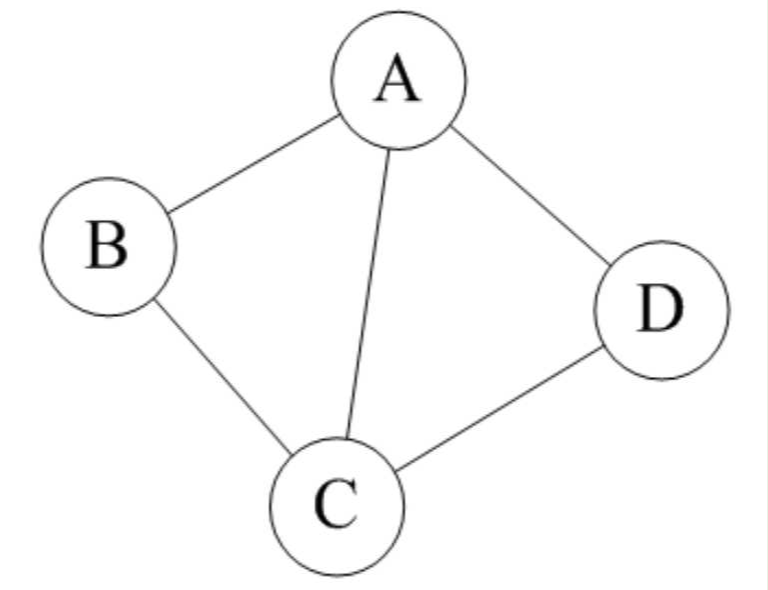
对于上图中的无向图，，其中顶点集合 ；边集合 。
有向边：若从顶点 到 的边有方向，则称这条边为有向边，也称为弧（Arc）。用有序偶 来表示， 称为弧尾（Tail）， 称为弧头（Head）。如果图中任意两个顶点之间的边都是有向边，则称该图为有向图（Directed graphs）。如下图所示。连接顶点 A 到 D 的有向边就是弧，A 是弧尾，D 是弧头，<A,D> 表示弧，注意不能写成 。
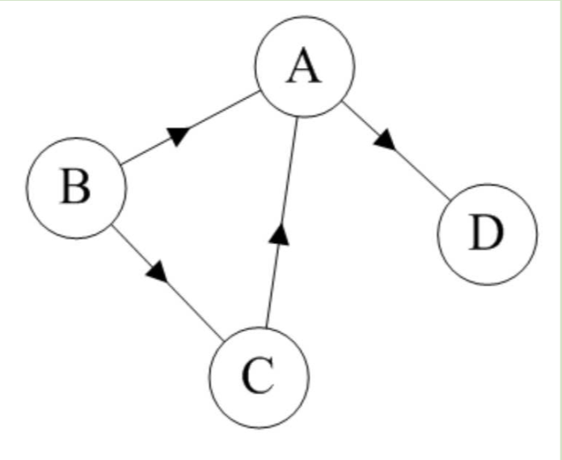
对于上图中的有向图，，其中顶点集合 ；边集合 。
注意，无向边用小括号“()”表示，而有向边则是用尖括号“<>”表示。
在图中，若不存在顶点到其自身的边，且同一条边不重复出现，则称这样的图为简单图。如下面两个图就不是简单图。本书只讨论简单图。
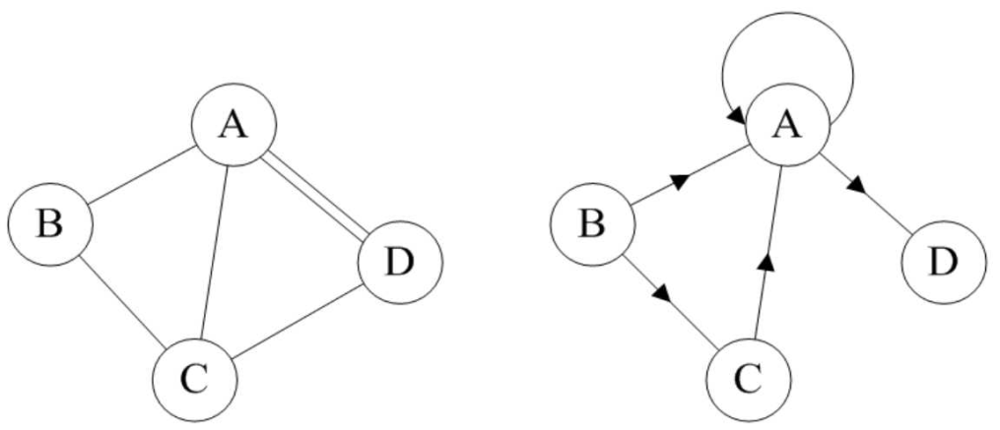
在无向图中，如果任意两个顶点之间都存在边，则称该图为无向完全图。含有 n 个顶点的无向完全图有 条边。如下图所示。
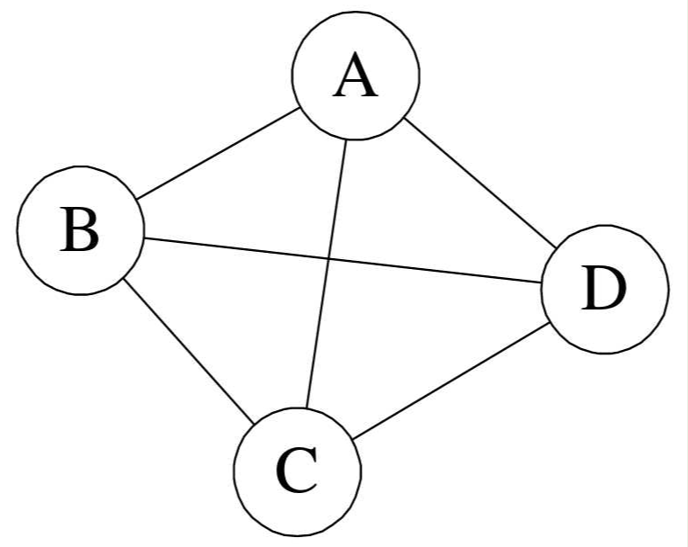
在有向图中，如果任意两个顶点之间都存在方向互为相反的两条弧，则称该图为有向完全图。含有 n 个顶点的有向完全图有 条边。如下图所示。
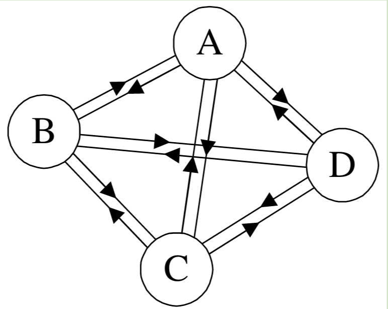
对于具有 n 个顶点和 e 条边数的图，无向图 ，有向图 。
有很少条边或弧的图称为稀疏图，反之称为稠密图。稀疏和稠密是模糊的概念，是相对而言的。
有些图的边或弧具有与它相关的数字，这种与图的边或弧相关的数叫做权（Weight）。这些权可以表示从一个顶点到另一个顶点的距离或耗费。这种带权的图通常称为网（Network）。如下图就是一张带权的图，即标识中国四大城市的直线距离的网，此图中的权就是两地的距离。
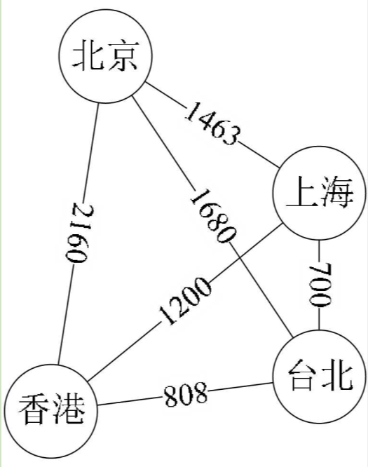
假设有两个图 和 ，如果 且 ，则称 为 的子图。如下图带底纹的图均为左侧无向图与有向图的子图。
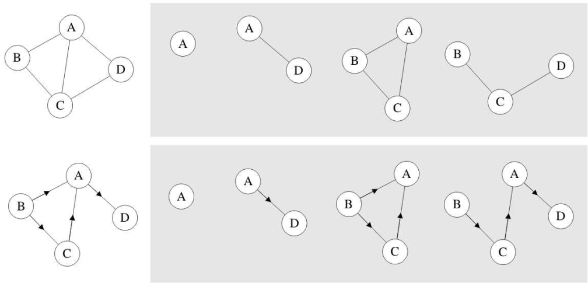
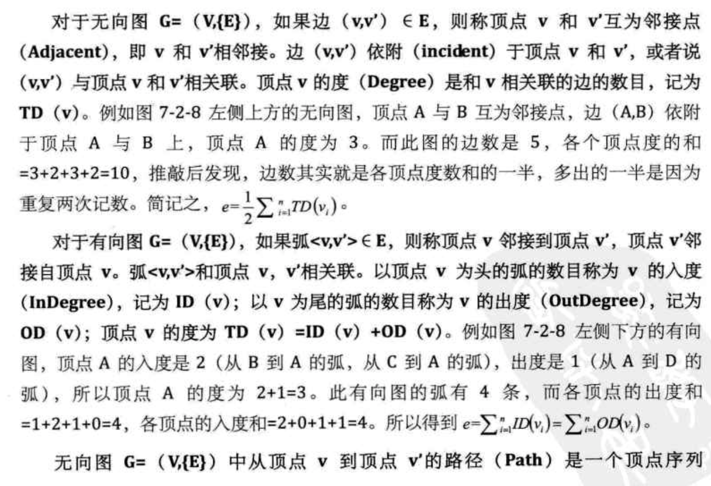
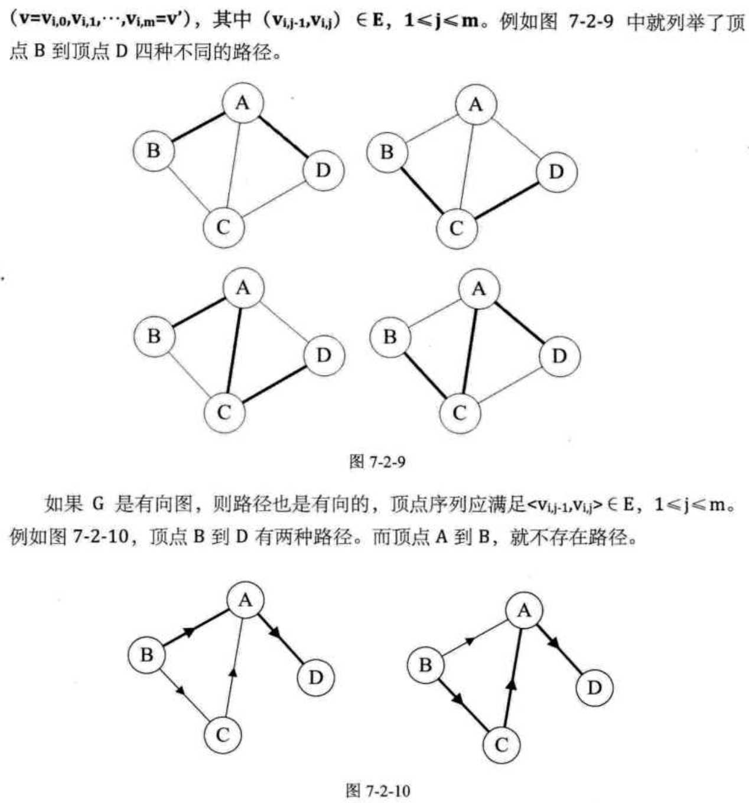
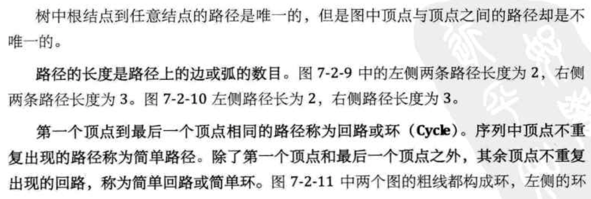
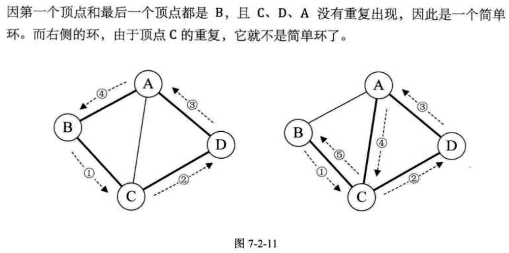
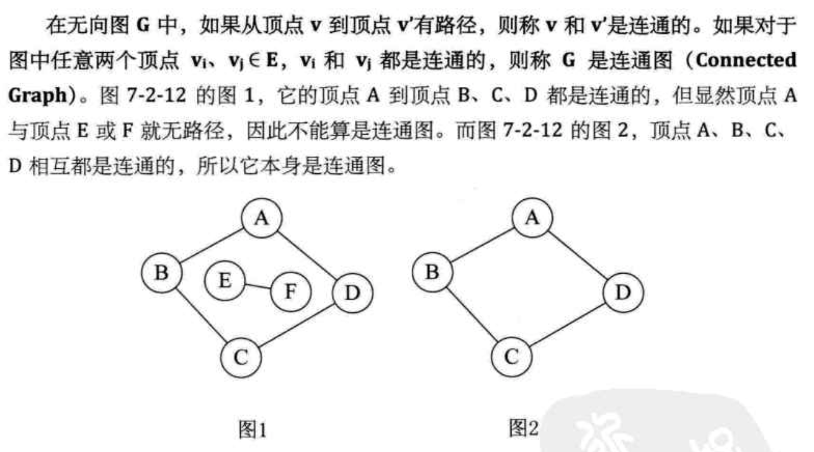
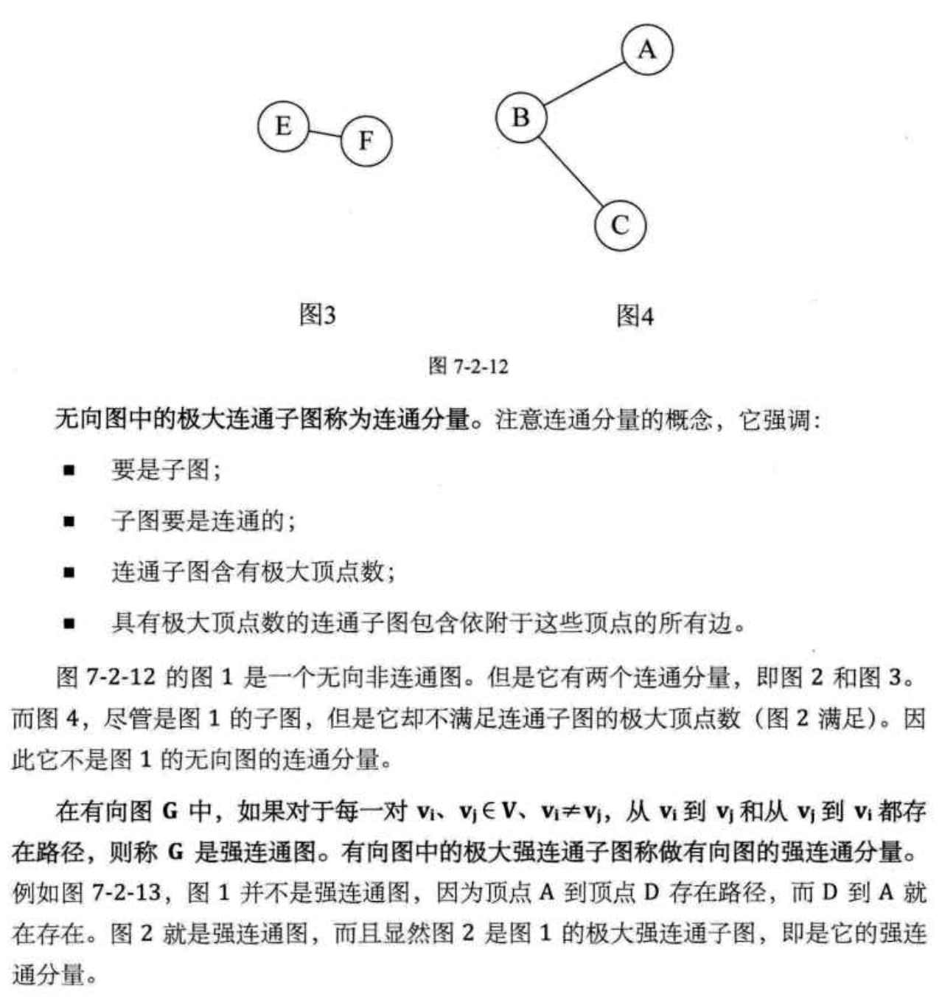
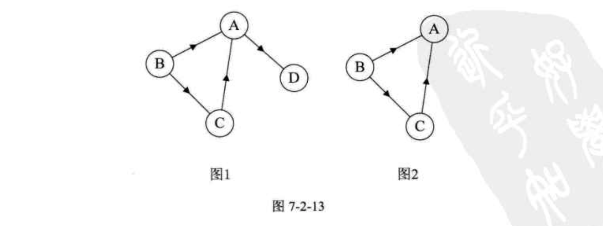
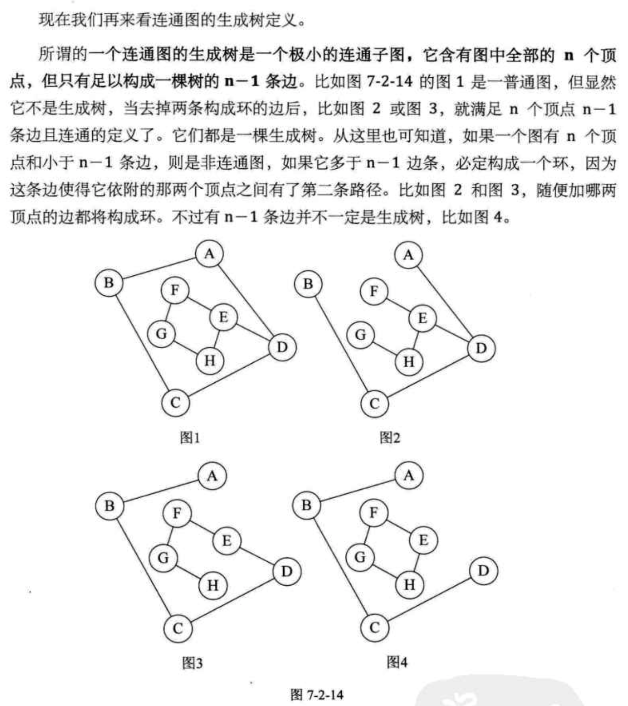
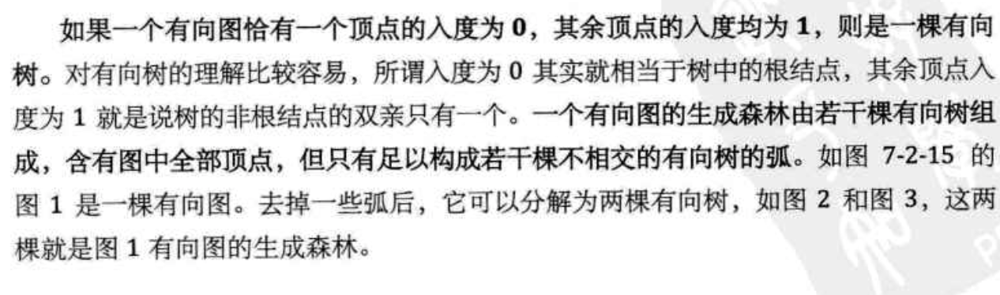
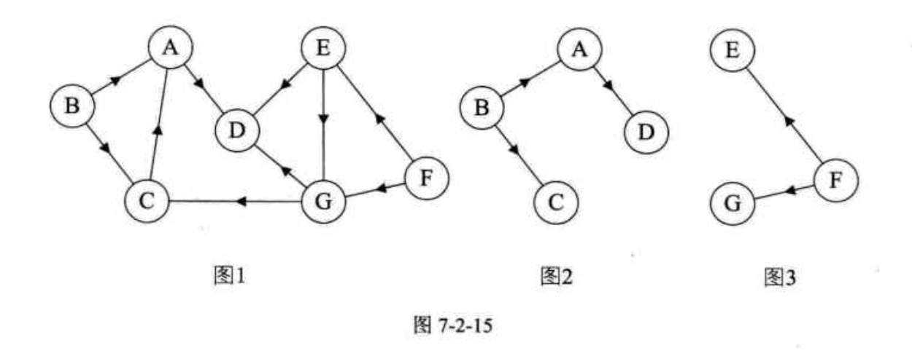
图按照有无方向分为无向图和有向图。无向图由顶点和边构成，有向图由顶点和弧构成。弧有弧尾和弧头之分。
图按照边或弧的多少分稀疏图和稠密图。如果任意两个顶点之间都存在边叫完全图，有向的叫有向完全图。若无重复的边或顶点到自身的边则叫简单图。
图中顶点之间有邻接点、依附的概念。无向图顶点的边数叫做度，有向图顶点分为入度和出度。
图上的边或弧上带权则称为网。
图中顶点间存在路径，两顶点存在路径则说明是连通的，如果路径最终回到起始点则称为环，当中不重复叫简单路径。若任意两顶点都是连通的，则图就是连通图，有向则称强连通图。图中有子图，若子图极大，连通则就是连通分量，有向的则称强连通分量。
无向图中连通且 n 个顶点 n-1 条边叫生成树。有向图中一顶点入度为 0 其余顶点入度为 1 的叫有向树。一个有向图由若干棵有向树构成生成森林。
ADT 图(Graph) Data 顶点的有穷非空集合和边的集合 Operation CreateGraph(*G,V,VR):按照顶点集合V和边弧集VR的定义构造图G。 DestroyGraph(*G):图G存在则销毁。 LocateVex(G,u):若图G中存在顶点u，则返回图中的位置。 GetVex(G,v):返回图G中顶点v的值。 PutVex(G,v,value):将图G中顶点v赋值value。 FirstAdjvex(G,*v):返回顶点v的一个邻接顶点，若顶点在G中无邻接顶点返回空。 NextAdjVex(G,v,*w):返回顶点v相对于顶点w的下一个邻接顶点，若w是v的最后一个邻接点则返回“空”。 InsertVex(*G,v):在图G中增添新顶点v. DeleteVex(*G,v):删除图G中顶点v及其相关的弧。 InsertArc(*G,v,w):在图G中增添弧<v,w>,若G是无向图，还需要增添对称弧<w,v>。 DeleteArc(*G,v,w):在图G中删除弧<v,w>，若G是无向图，则还删除对称弧<w,v>。 DESTraverse(G):对图G中进行深度优先遍历，在遍历过程中对每个顶点调用。 HFSTraverse(G):对图G中进行广度优先遍历，在遍历过程中对每个顶点调用。 endADT
从图的逻辑结构定义来看，图上任何一个顶点都可被看成是第一个顶点，任一顶点的邻接点之间也不存在次序关系。如下图所示的其实是同一个图，只是顶点位置不同，就造成了表象上不太一样的感觉。
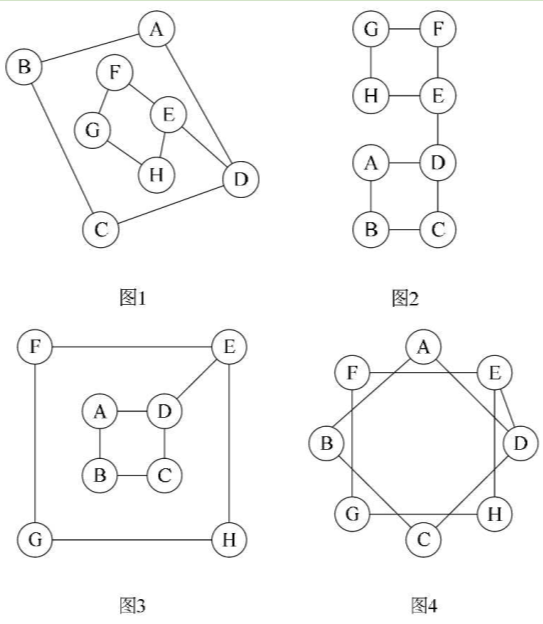
也正由于图的结构比较复杂，任意两个顶点之间都可能存在联系，因此无法以数据元素在内存中的物理位置来表示元素之间的关系，也就是说，图不可能用简单的顺序存储结构来表示。而多重链表的方式，即以一个数据域和多个指针域组成的结点表示图中的一个顶点，尽管可以实现图结构，但其实在树中，我们也已经讨论过，这是有问题的。如果各个顶点的度数相差很大，按度数最大的顶点设计结点结构会造成很多存储单元的浪费，而若按每个顶点自己的度数设计不同的顶点结构，又带来操作的不便。因此，对于图来说，如何对它实现物理存储是个难题，不过我们的前辈们已经解决了，现在我们来看前辈们提供的五种不同的存储结构。
图的邻接矩阵（Adjacency Matrix）存储方式是用两个数组来表示图。一个一维数组存储图中顶点信息，一个二维数组（称为邻接矩阵）存储图中的边或弧的信息。
设图 G 有 n 个顶点，则邻接矩阵是一个 n×n 的方阵，定义为：
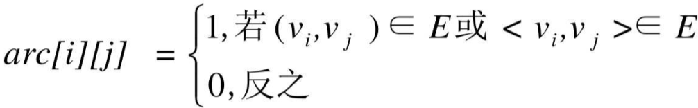
来看一个实例，下图左图是一个无向图。
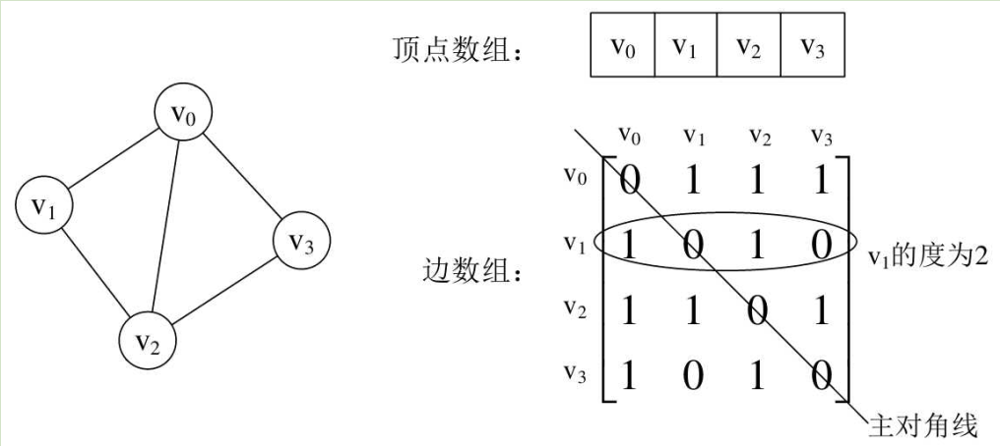
我们可以设置两个数组，顶点数组为 vertex，边数组 arc[4][4] 为右图这样的一个矩阵。矩阵的主对角线的值，即 arc[0][0]、arc[1][1]、arc[2][2]、arc[3][3] 全为 0 是因为不存在顶点到自身的边，比如 到 。 是因为 到 的边存在，而 是因为 到 的边不存在。无向图的边数组是一个对称矩阵。
有了这个矩阵，很容易知道图中的信息：
接下来看一个有向图的例子：
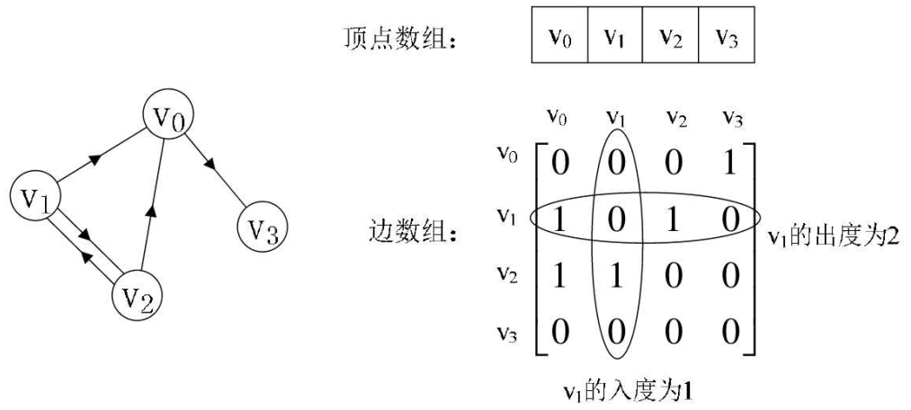
顶点数组为 vertex ，弧数组 arc[4][4] 为右图的一个矩阵。主对角线上数值依然为 0。但因为是有向图，所以此矩阵并不对称，比如由 到 有弧，得到 ，而 到 没有弧，因此 。
有向图讲究入度与出度，顶点 的入度为 1，正好是 第列各数之和。顶点 的出度为 2，即第 行的各数之和。
与无向图同样的办法，判断顶点 到 是否存在弧，只需要查找矩阵中 是否为 1。要求 的所有邻接点就是将矩阵第 i 行元素扫描一遍，查找 为 1 的顶点。
接下来看如何用该矩阵来表示网图。
设图 G 是网图，有 n 个顶点，则邻接矩阵是一个 n×n 的方阵，定义为：
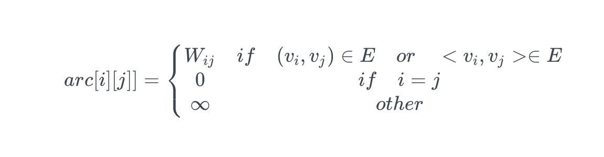
表示 或 上的权值。 表示一个计算机允许的、大于所有边上权值的值，也就是一个不可能的极限值。
图的邻接矩阵存储结构的代码：
typedef char VertexType; //顶点类型，由用户定义 typedef int EdgeType; //边上的权值类型，由用户定义 #define MAXVEX 100 //最大顶点数，应由用户定义 #define INFINITY 65535 //用65535来代表∞ typedef struct { VertexType vexs[MAXVEX]; //顶点表 EdgeType arc[MAXVEX][MAXVEX]; //邻接矩阵，可看作边表 int numVertexes,numEdges; //图中当前的顶点数和边数 }MGraph;
有了以上的结构定义，构造一个图就是给顶点表和边表输入数据的过程。
无向网图的创建代码：
void CreateMGraph(MGraph *G) { int i,j,k,w; printf("输入顶点数和边数：\n"); scanf("%d,%d",&G->numVertexes,&G->numEdges);//输入顶点数和边数 for(i=0;i<G->numVertexes;i++) scanf(&G->vexs[i]); for(i=0;i<G->numVertexes;i++) for(j=0;j<G->numVertexes;j++) G->arc[i][j] = INFINITY;//邻接矩阵初始化 for(k=0;k<G->numEdges;k++) //读入numEdges条边，建立邻接矩阵 { printf("输入边(vi,vj)上的下标i,下标j和权w:\n"); scanf("%d,%d,%d",&i,&j,&w); //输入边(vi,vj)上的权w G->arc[i][j] = w; G->arc[j][i] = G->arc[i][j];//因为是无向图，矩阵对称。 } }
从代码中也可以得到，n个顶点和e条边的无向网图的创建，时间复杂度为 ，其中对邻接矩阵 Garc 的初始化耗费了 的时间。
邻接矩阵是不错的一种图存储结构，但我们也发现，对于边数相对顶点较少的图，这种结构是存在对存储空间的极大浪费的。如下图所示：
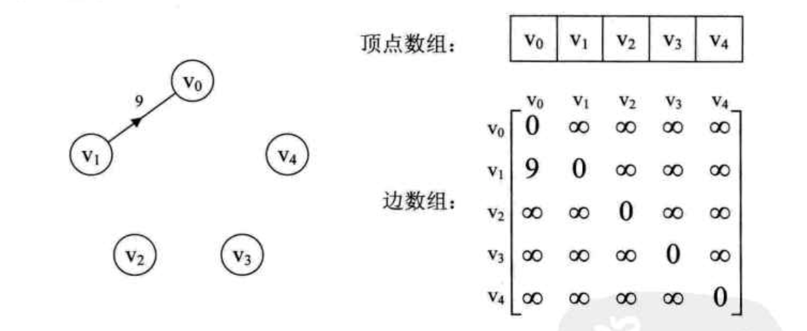
数组与链表相结合的存储方法称为邻接表(Adjacency List)。
邻接表的处理办法：
图中顶点用一个一维数组存储，对于顶点数组中，每个数据元素还需要存储指向第一个邻接点的指针，以便于查找该顶点的边信息。
图中每个顶点 的所有邻接点构成一个线性表，由于邻接点的个数不定，所以用单链表存储，无向图称为顶点 的边表，有向图则称为顶点 作为弧尾的出边表。
下图是一个无向图的邻接表结构：
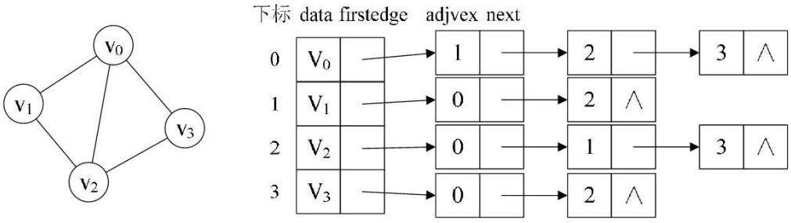
从图中可以看出，顶点表的各个结点由 data 和 firstedge 两个域表示，data 是数据域，存储顶点的信息，firstedge 是指针域，指向边表的第一个结点，即此结点的第一个邻接点。边表结点由 adjvex 和 next 两个域组成，adjvex 是邻接点域，存储某顶点的邻接点在顶点表中的下标，next 则存储指向边表中下一个结点的指针。比如 顶点与 、 互为邻接点，则在 的边表中，adjvex 分别为 的 0 和 的 2。
这样的结构，对于我们获得图的相关信息也是很方便的。比如我们要想知道某个顶点的度，就去查找这个顶点的边表中结点的个数。若要判断顶点 到 是否存在边，只需要测试顶点 的边表中 adjvex 是否存在结点 的下标 j 就行了。若求顶点的所有邻接点，其实就是对此顶点的边表进行遍历，得到的 adjvex 域对应的顶点就是邻接点。
若是有向图，邻接表结构是类似的。如下图第一幅图的邻接表就是第二幅图。有向图由于有方向，是以顶点为弧尾来存储边表的，很容易得到每个顶点的出度。有时为了便于确定顶点的入度或以顶点为弧头的弧，可以建立一个有向图的逆邻接表，即对每个顶点 都建立一个链接为 为弧头的表。如下图的第三幅图所示。
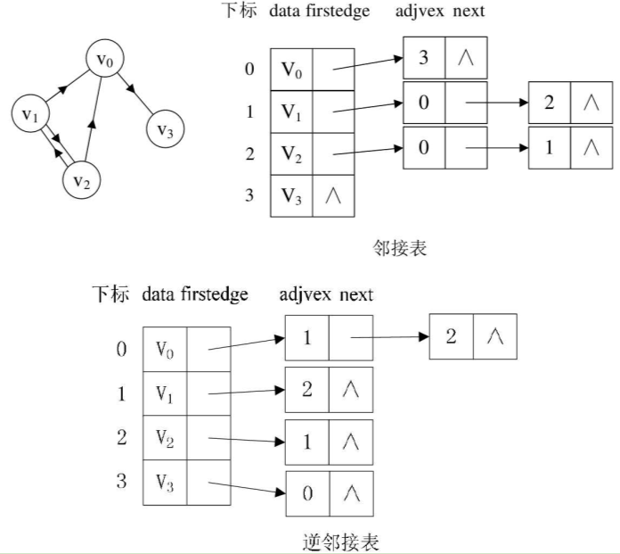
此时我们很容易就可以算出某个顶点的入度或出度是多少，判断两顶点是否存在弧也很容易实现。
对于带权值的网图，可以在边表结点定义中再增加一个 weight 的数据域存储权值信息。如下图所示：
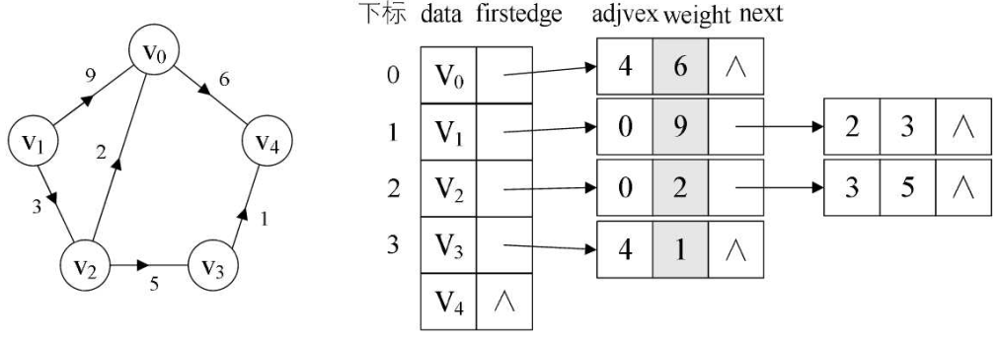
结点定义的代码:
typedef char VertexType; //顶点类型，由用户定义 typedef int EdgeType; typedef struct EdgeNode //边表结点 { int adjvex; //邻接点域，存储该顶点对应的下标 EdgeType weight; //用于存储权值，对于非网图可以不需要 struct EdgeNode *next;//链域，指向下一个邻接点 }EdgeNode; typedef struct VertexNode //顶点表结点 { VertexType data; //顶点域，存储顶点信息 EdgeNode *firstedge; //边表头指针 }VertexNode,AdjList[MAXVEX]; typedef struct { AdjList adjList; int numVertexes,numEdges; //图中当前顶点数和边数 }GraphAdjList;
无向图的邻接表创建代码：
/* 建立图的邻接表结构 */ void CreateALGraph(GraphAdjList *G) { int i,j,k; EdgeNode *e; printf("输入顶点数和边数：\n"); scanf("%d,%d",&G->numVertexes,&G->numEdges);//输入顶点数和边数 for(i=0;i<G->numVertexes,i++) { scanf(&G->adjList[i].data);//输入顶点信息 G->adjList[i].firstedge=NULL;//将边表置位空表 } for(k=0;k<G->numEdges;k++) { printf("输入边(vi,vj)上的顶点序号：\n"); scanf("%d,%d",&i,&j);//输入边(vi,vj)上的顶点序号 e=(EdgeNode *)malloc(sizeof(EdgeNode));/*向内存申请空间，生成边表结点*/ e->adjvex = j;//邻接序号为j e->next = G->adjList[i].firstedge;//将e指针指向当前顶点指向的结点 G->adjList[i].firstedge = e;//将当前顶点的指针指向e e=(EdgeNode *) malloc(sizeof(EdgeNode));/*向内存申请空间，生成边表结点*/ e->adjvex = i;//邻接序号为i e->next=G-adjList[j].firstedge;//将e指针指向当前顶点指向的结点 G->adjList[j].firstedge = e;//将当前顶点的指针指向e } }
更多内容（如源码解析等）详见书籍。
十字链表（Orthogonal List）：把邻接表和逆邻接表结合起来的存储方式。
重新定义顶点表结点结构如下:
重新定义的边表结点结构如下：
如下图所示，顶点依然是存入一个一维数组 实线箭头指针的图示邻接表相同。以顶点 来说，firstout 指向的是出边表中的第一个结点 。所以 边表结点的 headvex=3，而 tailvex 其实就是当前顶点 的下标 0，由于 只有一个出边顶点，所以 headlink 和 taillink 都是空。
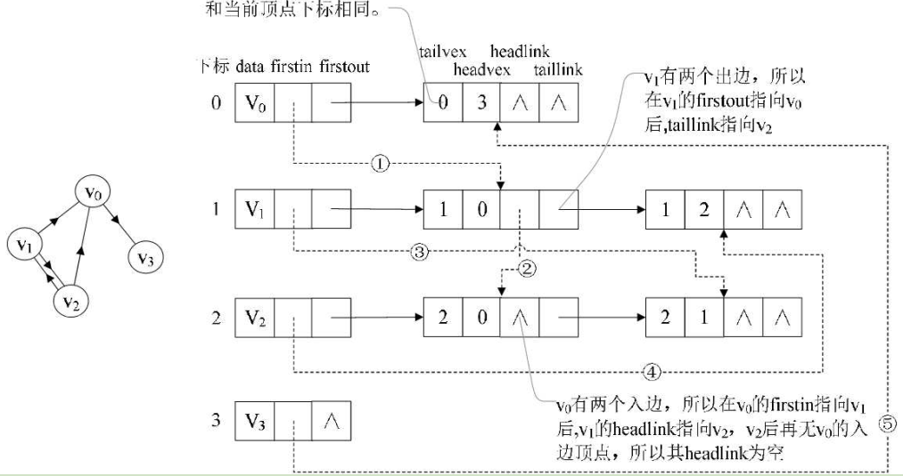
虚线箭头的含义此图的逆邻接表的表示。 有两个顶点 和 的入边。因此 的 firstin 指向顶点 的边表结点中 headvex 为 0 的结点，如图中的①。接着由入边结点的 headlink 指向下一个入边顶点 ，如图中的②。对于顶点 ，它有一个入边顶点 ，所以它的 firstin 指向顶点 的边表结点中 headvex 为 1 的结点，如图中的③。顶点 和 也是同样有一个入边顶点，如图中④和⑤。
十字链表的好处：
重新定义的边表结点结构如下：
我们来看结构示意图的绘制过程。
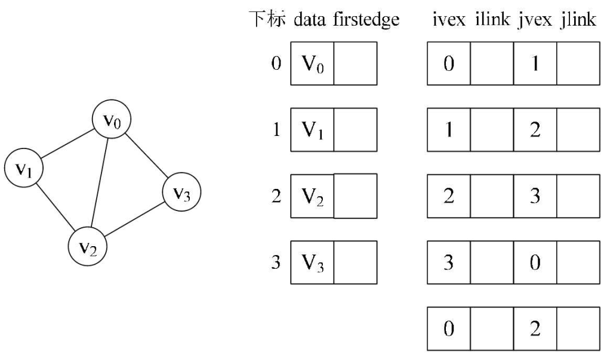
我们开始连线，首先连线的①②③④就是将顶点的 firstedge 指向一条边，顶点下标要与 ivex 的值相同，接着，由于顶点 的 边的邻边有 和 。因此⑤⑥的连线就是满足指向下一条依附于顶点 的边的目标，ilink 指向的结点的 jvex 一定要和它本身的 ivex 的值相同。连线⑦就是指 这条边，相当于顶点 指向 边后的下一条。 有三条边依附，所以在③之后就有了⑧⑨。连线⑩的就是顶点 在连线④之后的下一条边。左图一共有 5 条边，所以右图有 10 条连线，完全符合预期。
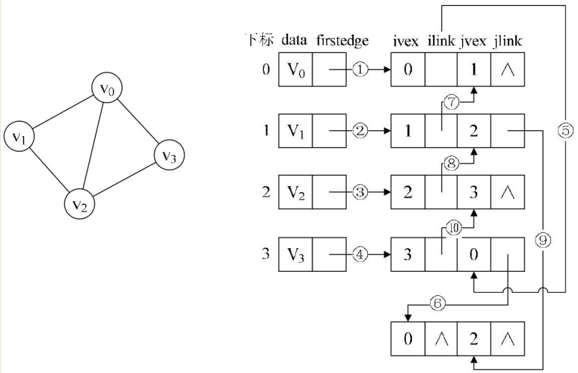
邻接多重表和邻接表的区别：同一条边在邻接表中用两个结点表示，在邻接多重表中只有一个结点。若要删除左图的 这条边，只需要将右图的⑥⑨的链接指向改为 “∧” 即可。
边集数组是由两个一维数组构成。一个是存储顶点的信息；另一个是存储边的信息，这个边数组每个数据元素由一条边的起点下标(begin)、终点下标(end)和权(weight)组成。
定义的边数组结构如下所示：
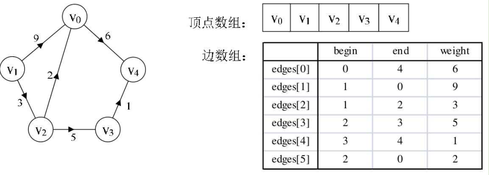
边集数组关注的是边的集合，在边集数组中要查找一个顶点的度需要扫描整个边数组，效率并不高。因此它更适合对边依次进行处理的操作，而不适合对顶点相关的操作。
从图中的某一顶点出发，访遍图中其余顶点，且使每一顶点仅被访问一次，这一过程就叫做图的遍历(Traversing Graph)。
通常有两种遍历次序方案：深度优先遍历和广度优先遍历。
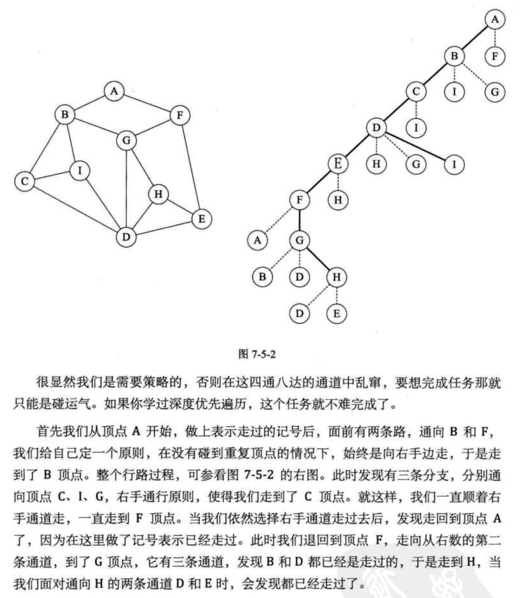
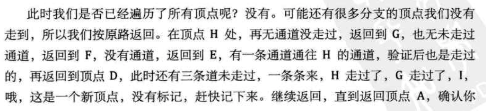
用邻接矩阵的方式来遍历：
typedef int Boolean;//Boolean 是布尔类型，其值是TRUE或FALSE Boolean visited[MAX];//访问标志的数组 /* 邻接矩阵的深度优先递归算法*/ void DFS(MGraph G,int i) { int j; visited[i]=TRUE; printf("%c",G.vexs[i]);//打印顶点，也可以其他操作 for(j=0;j<G.numVertexes;j++) if(G.arc[i][j]==1&&!visited[j]) DFS(G,j); //对为访问的邻接顶点递归调用 } /*邻接矩阵的深度优先遍历*/ void DFSTraverse(MGraph G) { int i; for(i=0;i<G.numVertexes;i++) visited[i] = FALSE; /* 初始所有顶点状态都是未访问过状态 */ for(i=0;i<numVertexes;i++) if(!visited[i]) /* 对未访问过的顶点调用DFS，若是连通图，只会执行一次 */ DFS(G,i); }
如果图结构为邻接表结构，其 DFSTraverse 函数的代码是几乎相同的，只是在递归函数中因为将数组换成了链表而有不同，代码如下：
/*邻接表的深度优先递归算法*/ void DFS(GraphAdjList GL,int i) { EdgeNode *p; visited[i] = TRUE; printf("%c",GL->adjList[i].data);//打印顶点，也可以其他操作 p = GL->adjList[i].firstedge; while(p) { if(!visited[p->adjvex]) /* 对未访问的邻接顶点递归调用 */ DFS(GL,p->adjvex); p = p->next; } } /*邻接表的深度遍历操作*/ void DFSTraverse(GraphAdjList GL) { int i; for (i = 0;i<GL->numVertexes;i++) visited[i] = FALSE;//初始所有顶点状态都是未访问过状态 for (i = 0;i<GL->numVertexes;i++) if(!visited[i])//对未访问过的顶点调用DFS，若是连通图，只会执行一次 DFS(GL,i); }
对于 n 个顶点 e 条边的图来说，邻接矩阵由于是二维数组，要查找每个顶点的邻接点需要访问矩阵中的所有元素，因此需要 的时间。而邻接表做存储结构时，找邻接点所需的时间取决于顶点和边的数量，所以是 。对于点多边少的稀疏图来说，邻接表结构使得算法在时间效率上大大提高。
广度优先遍历(Breadth_First_Search)，又称为广度优先搜索，简称为 BFS。类似于树的层序遍历。
将第一幅图稍微变形，变形原则是顶点 A 放置在最上第一层，让与它有边的顶点 B、F 为第二层，再让与 B 和 F 有边的顶点 C、I、G、E 为第三层，再将这四个顶点有边的 D、H 放在第四层。
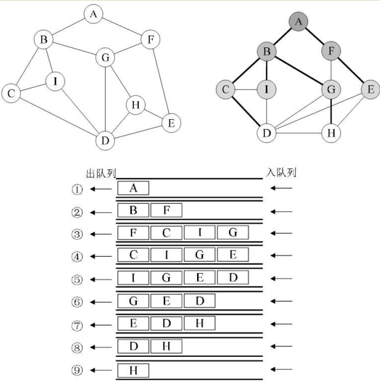
邻接矩阵的广度优先遍历算法：
void BFSTraverse(MGraph G) { int i,j; Queue Q; for(i = 0;i<G.numVertexes;i++) visited[i] = FALSE; InitQueue(&Q);//初始化一辅助用的队列 for(i=0;i<G.numVertexes;i++) //对每一个顶点做循环 { if(!visited[i])//若是未访问过 { visited[i] = TRUE;//设置当前顶点访问过 printf("%c",G.vexs[i]);//打印顶点，也可以其他操作 EnQueue(&Q,i);//将此顶点如队列 while(!QueueEmpty(Q))//若当前队列不为空 { DeQueue(&Q,&i);//将队列中元素出队列，赋值给i for(j=0;j<G.numVertexes;j++) { //判断其他顶点若与当前顶点存在边且未访问过 if(G.arc[i][j]==1&&!visited[j]) { visited[j] = TRUE;//将找到的此顶点标记为已访问过 printf("%c",G.vexs[j]);//打印顶点 EnQueue(&Q,j);//将找到的此顶点入队列 } } } } } }
邻接表的广度优先遍历：
/*邻接表的广度遍历算法*/ void BFSTraverse(GraphAdjList GL) { int i; EdgeNode *p; Queue Q; for(i=0;i<GL->numVertexes;i++) visited = FALSE; InitQueue(&Q); for(i = 0;i<GL->numVertexes;i++) { if(!visited[i]) { visited[i]=TRUE; printf("%c",GL->adjList[i].data);//打印顶点，也可以其他操作 EnQueue(&Q,i); while(!QueueEmpty(Q)) { DeQueue(&Q,&i); p = GL->adjList[i].firstedge;//找到当前顶点边表链表头指针 while(p) { if(!visited[p->adjvex)//若此顶点未被访问 { visited[p->adjvex] = TRUE; printf("%c",GL->adjList[p->adjvex].data); EnQueue(&Q,p->adjvex);//将此顶点如队列 } p = p->next;//指针指向下一个邻接点 } } } } }
图的深度优先遍历和广度优先遍历算法在时间复杂度上一样，不同之处仅在于对顶点的访问次序不同深度优先算法更适合目标比较明确的。以找到目标为主要目的的情况，而广度优先更适合在不断扩大遍历范围时找到相对最优解的情况。
最小成本，就是 n 个顶点，用 n-1 条边把一个连通图连接起来，并且使得权值的和最小。
最小生成树：构造连通网的最小代价生成树。
找连通图的最小生成树，经典的有两种方法，普里姆算法和克鲁斯卡尔算法。
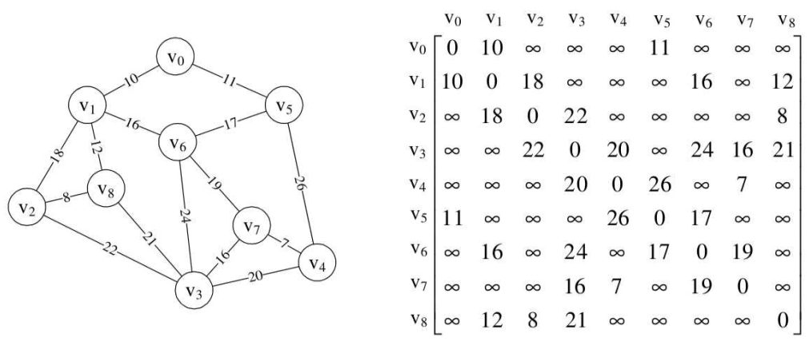
存储结构为 MGragh 的 G 有 9 个顶点，用 65535 来代表 。
void MiniSpanTree_Prim(MGraph MG) /* Prim算法生成最小生成树 */ { int min, i, j, k; int adjvex[MAXVEX];/* 保存相关顶点下标 */ int lowcost[MAXVEX];/* 保存相关顶点间边的权值 */ lowcost[0] = 0;/* 初始化第一个权值为0，即v0加入生成树,lowcost的值为0，在这里就是此下标的顶点已经加入生成树 */ adjvex[0] = 0;/* 初始化第一个顶点下标为0 */ for (i = 1; i < MG.numVertexes; i++) /* 循环除下标为0外的全部顶点 */ { lowcost[i] = MG.arc[0][i];/* 将v0顶点与之有边的权值存入数组 */ adjvex[i] = 0;/* 初始化都为v0的下标 */ } for (i = 1; i < MG.numVertexes; i++) { min = INFINITY; /* 初始化最小权值为∞ */ j = 1; k = 0; while (j < MG.numVertexes)/* 循环全部顶点 */ { if (lowcost[j] != 0 && lowcost[j] < min) { /* 如果权值不为0且权值小于min */ min = lowcost[j];/* 则让当前权值成为最小值 */ k = j;/* 将当前最小值的下标存入k */ } j++; } printf("(%d,%d)", adjvex[k], k); /* 打印当前顶点边中权值最小的边 */ lowcost[k] = 0;/* 将当前顶点的权值设置为0,表示此顶点已经完成任务 */ for (j = 1; j < MG.numVertexes; j++)/* 循环所有顶点 */ { if (lowcost[j] != 0 && MG.arc[k][j] < lowcost[j]) { /* 如果下标为k顶点各边权值小于此前这些顶点未被加入生成树权值 */ lowcost[j] = MG.arc[k][j];/* 将较小的权值存入lowcost相应位置 */ adjvex[j] = k;/* 将下标为k的顶点存入adjvex */ } } } }
关于源码分析的更多内容详见书籍。
由算法代码中的循环嵌套可得知此算法的时间复杂度为 。
更多内容详见书籍。
edge 边集数组结构的定义代码：
/* 对边集数组Edge结构的定义 */ typedef struct { int begin; int end; int weight; } Edge;
将邻接矩阵通过程序转化为右图的边集数组，并且对它们按权值从小到大排序。
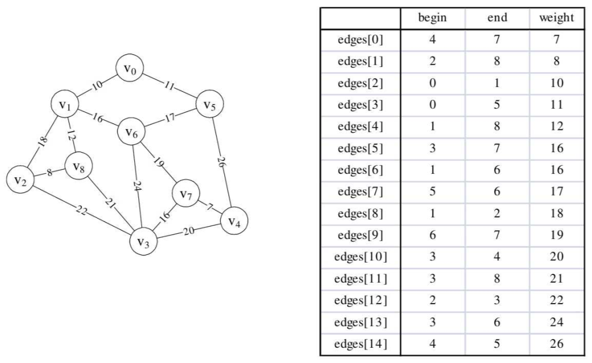
void MiniSpanTree_Kruskal(MGraph G) // Kruskal算法生成最小生成树 { int i, n, m; Edge edges[MAGEDGE]; // 定义边集数组 int parent[MAXVEX]; // 定义parent数组用来判断边与边是否形成环路 for( i=0; i < G.numVertexes; i++ ) parent[i] = 0; for( i=0; i < G.numEdges; i++ ) { n = Find(parent, edges[i].begin); // 4 2 0 1 5 3 8 6 6 6 7 m = Find(parent, edges[i].end); // 7 8 1 5 8 7 6 6 6 7 7 if( n != m ) // 如果n==m，则形成环路，不满足！ { parent[n] = m; // 将此边的结尾顶点放入下标为起点的parent数组中，表示此顶点已经在生成树集合中 printf("(%d, %d) %d ", edges[i].begin, edges[i].end, edges[i].weight); } } } int Find(int *parent, int f) //查找连线顶点的尾部小标 { while( parent[f] > 0 ) f = parent[f]; return f; }
此算法的 Find 函数由边数 e 决定，时间复杂度为 ，而外面有一个 for 循环 e 次。所以克鲁斯卡尔算法的时间复杂度为。
克鲁斯卡尔算法主要是针对边来展开，边数少时效率会非常高，对于稀疏图有很大的优势；普里姆算法对于稠密图，即边数非常多的情况会更好一些。
非网图的最短路径，是指两顶点之间经过的边数最少的路径；网图的最短路径是指两顶点之间经过的边上权值之和最少的路径，并且称路径上的第一个顶点是源点，最后一个顶点是终点。 显然，我们研究网图更有实际意义，就地图来说，距离就是两顶点间的权值之和。非网图可以理解为所有的边的权值都为 1 的网。
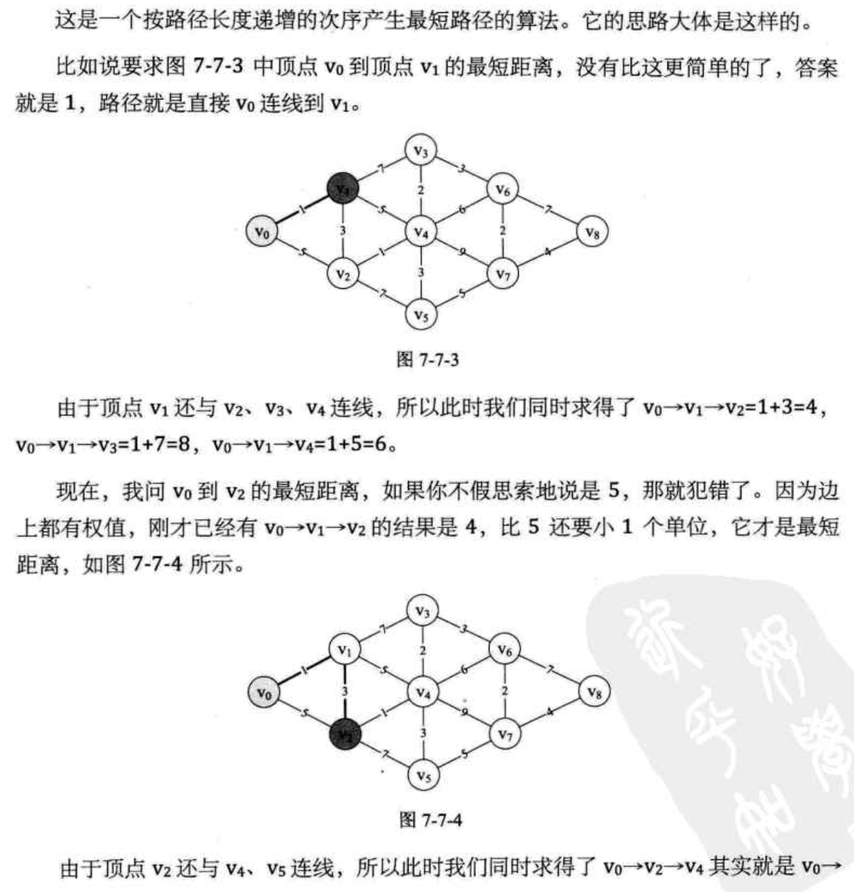
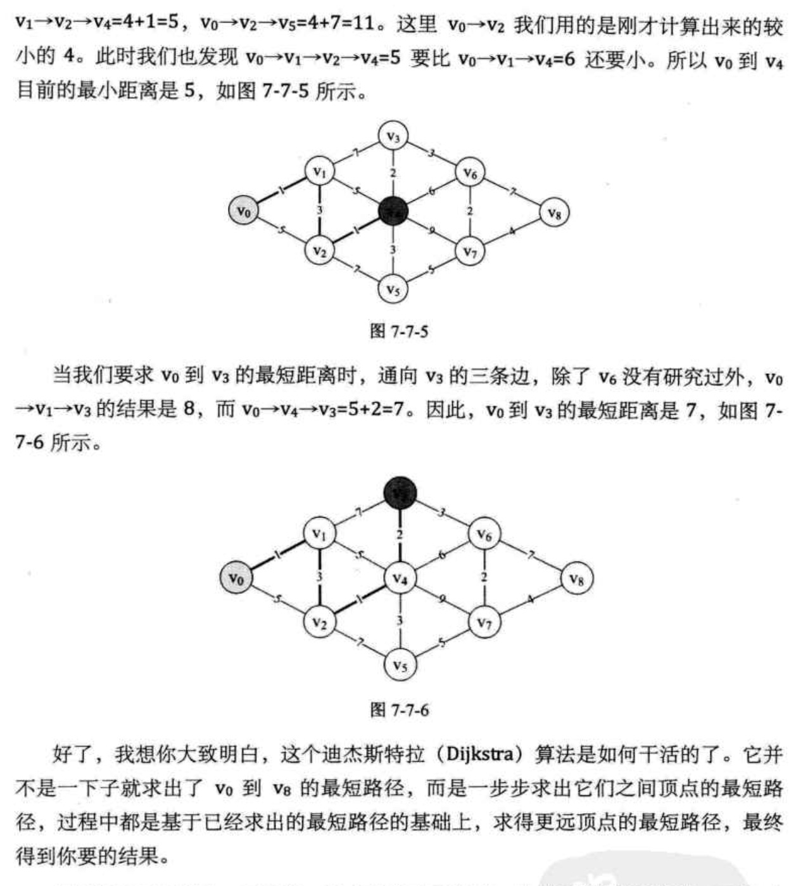
代码如下：
#define MAXVEX 9 #define INFINITY 65535 // 是 2^16 ，而不是 2^32，因为这样可以防止溢出 typedef int Patharc[MAXVEX]; // 用于存储最短路径下标的数组 typedef int ShortPathTable[MAXVEX]; // 用于存储到各点最短路径的权值和
void ShortestPath_Dijkstar(MGraph G, int V0, Patharc *P, ShortPathTable *D) { int v, w, k, min; int final[MAXVEX]; // final[w] = 1 表示已经求得顶点V0到Vw的最短路径 for( v=0; v < G.numVertexes; v++ ) // 初始化数据 { final[v] = 0; // 全部顶点初始化为未找到最短路径 (*D)[V] = G.arc[V0][v]; // 将与V0点有连线的顶点加上权值 (*P)[V] = 0; // 初始化路径数组P为0 } (*D)[V0] = 0; // V0至V0的路径为0 final[V0] = 1; // V0至V0不需要求路径 for( v=1; v < G.numVertexes; v++ ) // 开始主循环，每次求得V0到某个V顶点的最短路径 { min = INFINITY; for( w=0; w < G.numVertexes; w++ ) { if( !final[w] && (*D)[w]<min ) { k = w; min = (*D)[w]; } } final[k] = 1; // 将目前找到的最近的顶点置1 for( w=0; w < G.numVextexes; w++ ) // 修正当前最短路径及距离 { if( !final[w] && (min+G.arc[k][w] < (*D)[w]) ) // 如经过v顶点的路径比现在这条路径的长度短的话，更新 { (*D)[w] = min + G.arc[k][w]; // 修改当前路径长度 (*p)[w] = k; // 存放前驱顶点 } } } }
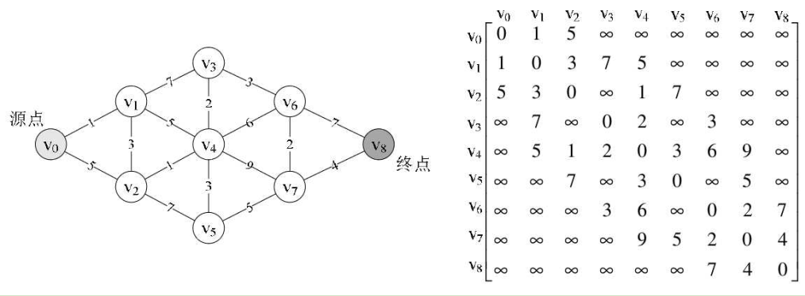
更多内容（如源码分析等）详见书籍。
更多内容详见书籍。
接下来谈无环的图应用。无环，即图中没有回路。
在一个表示工程的有向图中，用顶点表示活动，用弧表示活动之间的优先关系，这样的有向图为顶点表示活动的网，称为 AOV 网（ActivityOn Vertex Network）。AOV 网中的弧表示活动之间存在的某种制约关系。AOV网中不能存在回路。
设 是一个具有 n 个顶点的有向图， 中的顶点序列 ，满足若从顶点 到 有一条路径，则在顶点 序列中顶点 必在顶点之前。称这样的顶点序列为一个拓扑序列。
拓扑排序是对一个有向图构造拓扑序列的过程。
构造时会有两个结果：
一个不存在回路的 AOV 网，我们可以将它应用在各种各样的工程或项目的流程图中，满足各种应用场景的需要。
对 AOV 网进行拓扑排序的基本思路是：从 AOV 网中选择一个入度为 0 的顶点输出，然后删去此顶点，并删除以此顶点为尾的弧，继续重复此步骤，直到输出全部顶点或者 AOV 网中不存在入度为 0 的顶点为止。
更多内容详见书籍。
拓扑排序主要是为解决一个工程 能否顺序进行的问题，但有时我们还需要解决工程完成需要的最短时间问题。
在一个表示工程的带权有向图中，用顶点表示事件，用有向边表示活动，用边上的权值表示活动的持续时间，这种有向图的边表示活动的网，称之为 AOE 网（Activity On Edge Net-work）。
AOE 网中没有入边的顶点称为始点或源点，没有出边的顶点称为终点或汇点。
如下图所示。 是源点，表示一个工程的开始， 是汇点，表示整个工程的结束，顶点 分别表示事件，弧 都表示一个活动，用 表示，它们的值代表着活动持续的时间，比如弧 就是源头开始的第一个活动 ，它的时间是 3 个单位。
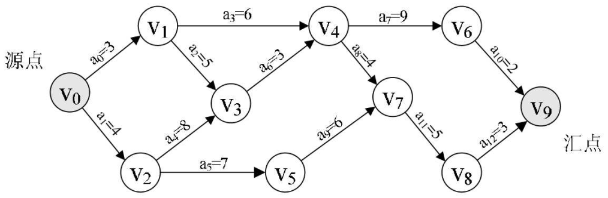
既然 AOE 网是表示工程流程的，所以它就具有明显的工程的特性。如有在某顶点所代表的事件发生后，从该顶点出发的各活动才能开始。只有在进入某顶点的各活动都已经结束，该顶点所代表的事件才能发生。
尽管 AOE 网与 AOV 网都是用来对工程建模的，但它们还是有很大的不同，主要体现在 AOV 网是顶点表示活动的网，它只描述活动之间的制约关系，而 AOE 网是用边表示活动的网，边上的权值表示活动持续的时间，如图7-9-3 所示两图的对比。因此，AOE 网是要建立在活动之间制约关系没有矛盾的基础上，再来分析完成整个工程需要多少时间，或者为缩短完成工程所需时间，应当加快哪些活动等。
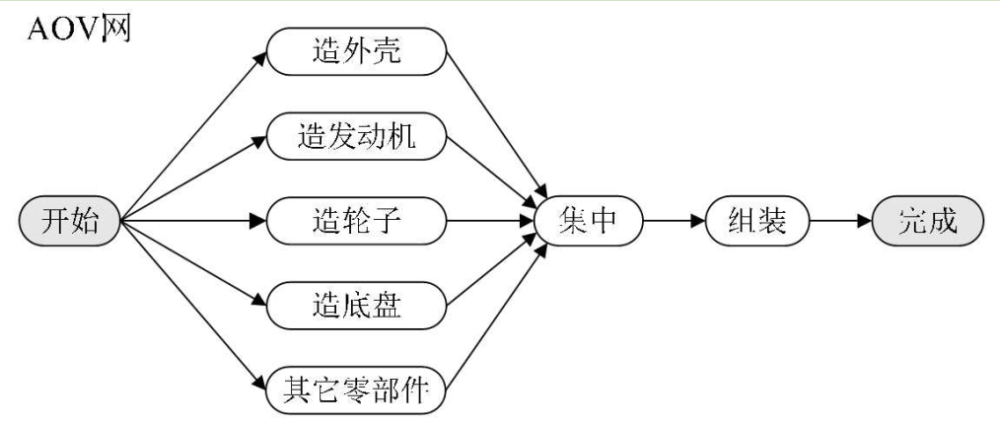
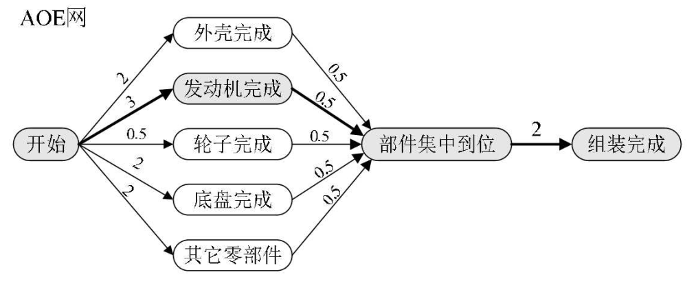
我们把路径上各个括动所持续的时间之和称为路径长度，从源点到汇点具有最大长度的路径叫关键路径，在关键路径上的活动叫关键活动。 显然就图 7-9-3的 AOE 网而言，开始—发动机完成—部件集中到位—组装完成就是关键路径，路径长度为 5.5。
如果我们需要缩短整个工期，去改进轮子的生产效率，哪怕改动成 0.1 也是无益于整个工期的变化，只有缩短关键路径上的关键活动时间才可以减少整个工期长度。例如如果发动机制造缩短为 2.5，整车组装缩短为 1.5，那么关键路径长度就为 4.5，整整缩短了一天的时间。
那么现在的问题就是如何找出关键路径。对人来说，图7-9-3 第二幅这样的 AOE 网，应该比较容易得出关键路径的，而对于图7-9-2 的 AOE 网，就相对麻烦一些，如 果继续复杂下去，可能就非人脑该去做的事了。
更多内容详见书籍。
图是计算机科学中非常常用的一类数据结构，有许许多多的计算问题都是用图来定义的。由于图也是最复杂的数据结拘，对它讲解时，涉及到数组、链表、栈、队列、树等之前学的几乎所有数据结构。因此从某种角度来说，学好了图，基本就等于理解了数据结构这门课的精神。
我们在图的定义这一节，介绍了一大堆定义和术语，一开始可能会有些迷茫，不过一回生二回熟，多读几遍，基本都可以理解并记住它们的特征，在图的定义这一节的末尾，我们已经有所总结，这里就不再赞述了。
图的存储结构我们一共讲了五种，如下图所示，其中比较重要的是邻接矩阵和邻接表，它们分别代表着边集是用数组还是链表的方式存储。十字链表是邻接矩阵的一种升级，而邻接多重表则是邻接表的升级。边集数组更多考虑的是对边的关注。用什么存储结构需要具体问题具体分析，通常稠密图，或读存数据较多，结构修改较少的图，用邻接矩阵要更合适，反之则应该考虑邻接表。
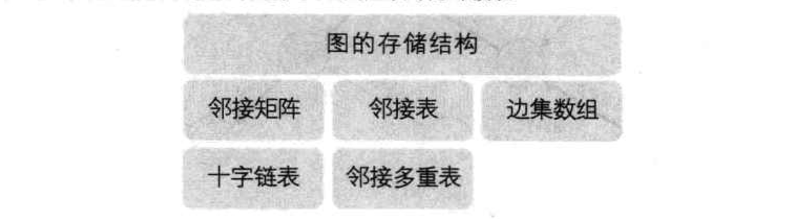
图的遍历分为深度和广度两种，各有优缺点，就像人在追求卓越时，是着重深度还是看重广度，总是很难说得清楚。
图的应用是我们这一章浓墨重彩的一部分，一共谈了三种应用：最小生成树、最短路径和有向无环图的应用。
最小生成树，我们讲了两种算法：普里姆算法和克鲁斯卡尔算法。普里姆算法像是走一步看一步的思维方式，逐步生成最小生成树。而克鲁斯卡尔算法则更有全局意识，直接从图中最短权值的边入手，找寻最后的答案。
最短路径的现实应用非常多，我们也介绍了两种算法。迪杰斯特拉算法更强调单源顶点査找路径的方式，比较符合我们正常的思路，容易理解原理，但算法代码相对复杂。而弗洛伊德算法则完全抛开了单点的局限思维方式，巧妙地应用矩阵的变换，用最清爽的代码实现了多顶点间最短路径求解的方案，原理理解有难度，但算法编写很简洁。
有向无环图时常应用于工程规划中，对于整个工程或系统来说，我们一方面关心的是工程能否顺利进行的问题，通过拓扑排序的方式，我们可以有效地分析出一个有向图是否存在环，如果不存在，那它的拓扑序列是什么？另一方面关心的是整个工程完成所必须的最短时间问题，利用求关键路径的算法，可以得到最短完成工程的工期以及关键的活动有哪些。
事实上，图的应用算法还有不少，本章只是抛砖引玉。